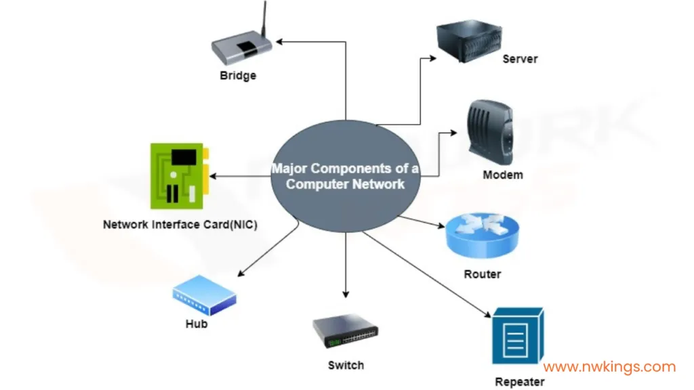
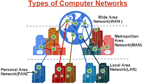

A computer network is a group of interconnected devices that can communicate and share resources. Networking helps people exchange information quickly and efficiently.

Wireless networking allows devices to connect without cables. It uses radio signals to transfer data. Wi-Fi is the most common wireless networking technology.
Connects personal devices like phones and smartwatches.
Connects computers within a home, office, or school.
Covers a city or large campus.
Covers large geographical areas. The Internet is an example.
